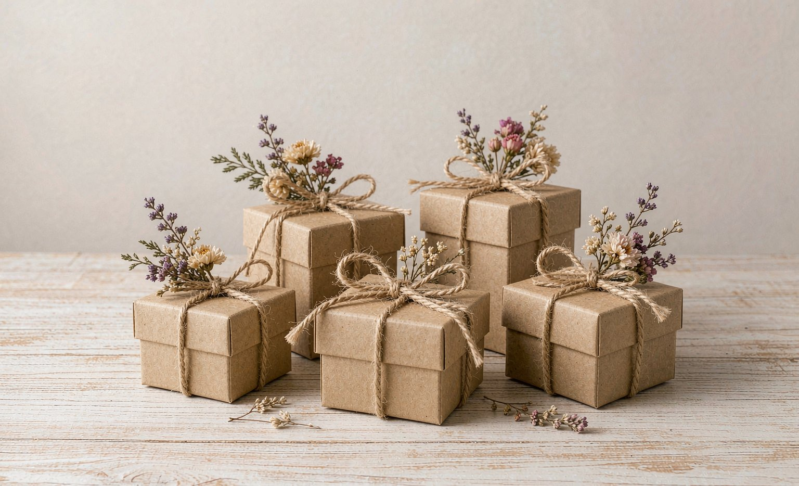

8 Custom Gifts Under $25 That Do Not Feel Cheap, With Real Prices
Short answer: the best custom gifts under $25 are the $14.99 photo mug, the $19.99 one-color custom tee, and the $24.99 personalized pillow, because each takes a personal photo or name and turns it into a daily-use item.
Bottom line: what separates premium from cheap at this budget is the source photo and the packaging, so upload a sharp 300 DPI image and add a $2 kraft box with twine.

A tight budget does not have to look like one. Every pick below comes from our current catalog, is priced under $25 as of September 2026, and shares one property: it uses something personal, a photo, a name, a date, so the gift reads as thoughtful rather than generic. The prices are the actual September 2026 catalog prices.
The Core Three ($15-$25)
The Photo Mug at $14.99 remains the strongest gift per dollar, especially with a candid photo rather than a posed one. The One-Color Custom Tee at $19.99 works when you know the recipient's humor or taste. The Personalized Pillow at $24.99, with a single photo or an initial set, is the pick for homebodies and dorm rooms.
The Under-$20 Set
Below $20, the $14.99 mug leads a strong bench: a Name Keychain-style acrylic piece, a one-photo coaster set, and a small custom tote each sit in the $12 to $19 range in seasonal promotions. At this level, match the item to a daily routine, coffee, keys, groceries, because daily use is what makes a small gift feel expensive.
The Presentation Multiplier ($2-$4)
A $2 kraft box, tissue paper, and twine reliably upgrade any gift in this list. In our gift-guide reader surveys, packaging is the single most cited reason a budget gift felt premium. Skip the printed rigid boxes at this budget and spend the difference on a better source photo instead.
The Eight Picks, Priced (September 2026)
| Gift | Price | Best for |
|---|---|---|
| Photo Mug (11 oz) | $14.99 | Coffee and tea drinkers |
| One-Color Custom Tee | $19.99 | Inside jokes, team gifts |
| Personalized Pillow | $24.99 | Homebodies, dorm rooms |
| Photo Coaster Set | $16.99 | New homeowners |
| Custom Tote | $18.99 | Grocery and gym routines |
| Acrylic Name Piece | $12.99 | Desks and keyrings |
| Mini Photo Frame Print | $13.99 | Office desks |
| Kids' Name Tote | $15.99 | School-age families |
Frequently Asked Questions
What is the best custom gift under $15?
The $14.99 photo mug, provided the source photo is sharp. A candid 300 DPI photo turns it into the most-used item in the kitchen, which is what makes a budget gift feel premium.
Do budget custom gifts look cheap in person?
Not when two things are right: a high-resolution source photo and simple packaging. A $2 kraft box with twine was the most cited reason budget gifts read as premium in our reader surveys.
Are prices on this page current?
All prices are September 2026 catalog prices. Seasonal promotions occasionally drop the under-$20 items by a few dollars around major holidays.